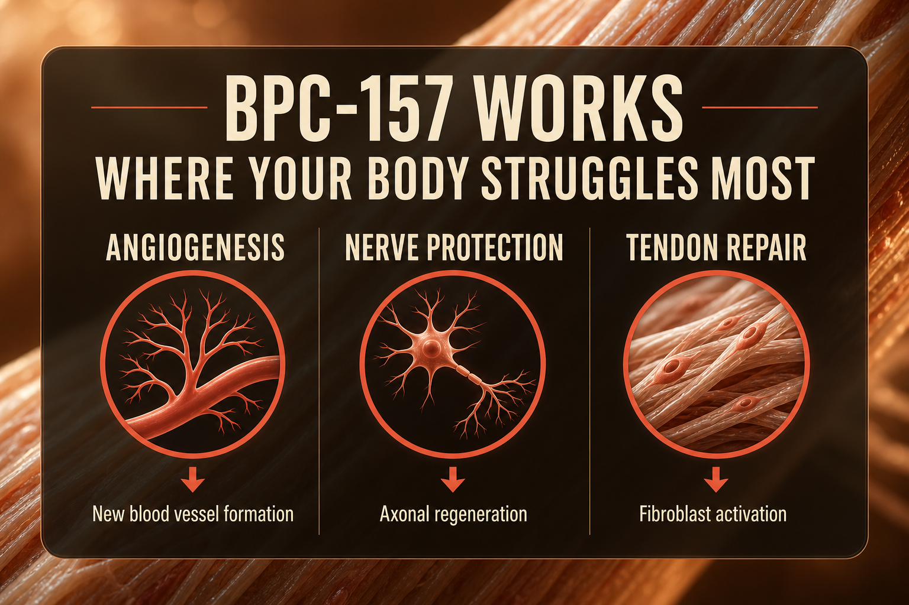

What BPC-157 Is
BPC-157 stands for Body Protection Compound-157. It is a synthetic pentadecapeptide - a chain of 15 amino acids - derived from a protein found naturally in human gastric juice. Your body already produces a version of this compound as part of its natural cytoprotective system. The synthetic research version mirrors that sequence and is studied for its effects on tissue repair across multiple body systems.
BPC-157 has been the subject of over 100 preclinical studies spanning more than three decades, making it one of the most extensively researched peptides in the recovery and repair category. A 2025 systematic review in the American Journal of Sports Medicine examined 36 studies specifically on orthopaedic applications. A 2025 pilot human safety study administered up to 20mg intravenously in healthy adults with no adverse effects reported.
It is not FDA-approved for any indication. As of April 22, 2026, BPC-157 was removed from the FDA Category 2 bulk substances list, with a Pharmacy Compounding Advisory Committee consultation planned for July 23, 2026. It remains prohibited under WADA for competitive athletes. In Canada it exists as a research chemical with no approved prescription pathway.
Plain English Version
The Plumber Who Knows Your Whole Building
Think about what happens when you call a plumber for a leak under your kitchen sink. A good plumber does not just patch the visible leak and leave. They trace the pipe back to its source, check the pressure, look at what else might be stressed by the same system, and fix the actual problem rather than just the symptom you called about.
BPC-157 works like that plumber - but for your body's tissue repair system. When you inject it subcutaneously near an injury site, it does not just sit there waiting to be absorbed randomly. It migrates toward damaged tissue, stimulates the formation of new blood vessels to bring resources to the repair site, activates the growth factors that signal fibroblasts to lay down new collagen, and then modulates the inflammatory response to prevent the repair process from getting derailed by excessive swelling.
What makes BPC-157 unusual compared to most recovery compounds is that it works locally where it is needed, but it also has systemic effects through the nitric oxide pathway. A plumber who fixes your kitchen sink but also checks your bathroom and basement while they are there.
The tissue it seems most effective on - tendons, ligaments, gut lining, and bone - are all notoriously slow healers because they have limited blood supply. BPC-157's angiogenic effect (new blood vessel formation) directly addresses that core problem. It is not magic. It is plumbing.
One sentence: BPC-157 is a local and systemic tissue repair signal that your body already produces - the research version amplifies what your own system is trying to do.
How To Picture It

How It Works
BPC-157 operates through multiple parallel mechanisms rather than a single receptor pathway. Primary mechanisms include nitric oxide (NO) system modulation, FAK-paxillin pathway activation (which drives tendon fibroblast proliferation), VEGF upregulation (vascular endothelial growth factor - the signal for new blood vessel formation), and growth hormone receptor expression enhancement in tendon cells.
The nitric oxide pathway is particularly significant. BPC-157 appears to normalize NO production - increasing it when it is deficient (as in healing tissue) and moderating it when it is excessive (as in acute inflammatory states). This dual normalizing effect explains why BPC-157 appears useful across such a wide range of tissue types and conditions.
The half-life of approximately 30 minutes after subcutaneous injection means it clears quickly from circulation, which is why twice-daily dosing is standard in most protocols. The short half-life does not mean it is ineffective - the downstream signaling cascade it triggers continues long after the peptide itself has cleared.
Documented Benefits
the most extensively documented application in preclinical models, including rotator cuff, ACL, and Achilles tendon injury
BPC-157 survives stomach acid (unlike most peptides), making it one of the few compounds with documented oral bioavailability for gut-specific applications
documented axonal regeneration effects relevant to nerve compression injuries and peripheral neuropathy
preclinical evidence for accelerated fracture repair and bone density support
studied in animal models for surgical wound healing and anastomosis protection
reduces inflammatory cytokines without fully suppressing the immune response
preserved function and accelerated regeneration in crush injury models
the one published human study (16 patients, intra-articular knee injection) showed 87.5% reported significant pain relief at 6-12 month follow-up
Dosing Protocol
| Phase | Dose | Frequency | Notes |
|---|---|---|---|
| Conservative start | 250mcg | Once daily | Establish tolerance, assess response |
| Standard | 250mcg | Twice daily | Most documented community protocol |
| Active injury | 500mcg | Twice daily | Higher end for acute tissue damage |
| Maintenance | 250mcg | Once daily | After injury resolves |
| Oral (gut only) | 250-500mcg | Once or twice daily | Capsule or dissolved in water for GI-specific applications |
Inject subcutaneously near the injury site when possible. For systemic or gut applications, abdominal injection or oral administration are both documented approaches.
Reconstitution Standard
BPC10 (10mg vial) + 2ml BAC water = 5mg/ml
| Your Dose | Units to Draw | Volume |
|---|---|---|
| 250mcg | 5 units | 0.05ml |
| 500mcg | 10 units | 0.1ml |
At 5mg/ml, one 10mg vial at 250mcg twice daily = 20 days of supply. Use the calculator on this site for your specific vial size and BAC water amount. Reconstituted BPC-157 is stable refrigerated for up to 28 days.
Dosage Build-Up Timeline
- Week 1-2: 250mcg once daily - establish tolerance, assess injection site response
- Week 3-4: 250mcg twice daily - move to standard therapeutic protocol
- Week 5-8: Continue at 250mcg twice daily - assess progress at injury or target site
- Week 9-12: Reassess - reduce to once daily maintenance if improving, continue twice daily if active repair still needed
If this peptide is not being used for a specific injury, this timeline serves as a protocol review rhythm rather than a strict titration.
Common Mistakes
BPC-157 works more effectively when injected near the target tissue
tendon and ligament repair takes weeks to months regardless of the compound used; results build over 4-8 weeks
the 30-minute half-life makes frequency more important than dose size
swirl gently, never shake; peptides are fragile
daily injection at the same spot causes local irritation and uneven tissue
anti-inflammatory medications can partially counteract BPC-157's signaling cascade during the early repair phase
tissue repair continues beyond pain resolution; stopping early can leave incomplete healing
Contraindications And Cautions
BPC-157 promotes angiogenesis; theoretical concern that new blood vessel formation could support tumor vascularization; discuss with oncologist before use
colonoscopy clearance recommended before starting
insufficient safety data; avoid
prohibited under WADA S0 (non-approved substances); use will result in anti-doping rule violation
BPC-157 affects nitric oxide and vascular tone; discuss with prescribing physician
start at the lowest dose (250mcg once daily) and hold for longer before increasing; kidney clearance is reduced
What To Track
- Pain level at target site (1-10 scale, weekly)
- Range of motion if applicable (weekly subjective assessment)
- Post-exercise recovery time (note days to return to baseline)
- Any local injection site reactions (redness, swelling, tenderness)
- Gut symptoms if using for GI applications (bloating, discomfort, bowel habits)
- Overall energy and inflammation markers (subjective weekly)
Stacks Well With
- TB-500 - the classic Wolverine Stack; BPC-157 handles local repair while TB-500 drives systemic cell migration; the two mechanisms are directly complementary
- KLOW - BPC-157 is already one of KLOW's four components; standalone BPC-157 is used when higher doses of the repair compound specifically are needed
- NAD+ - cellular energy support complements tissue repair capacity
- CJC-1295 + Ipamorelin - some protocols add growth hormone support for more comprehensive body recomposition alongside repair
Sources
- Vasireddi N et al. Emerging Use of BPC-157 in Orthopaedic Sports Medicine. American Journal of Sports Medicine, 2025. journals.sagepub.com
- Lee & Burgess. BPC-157 IV pilot safety study. Alternative Therapies in Health and Medicine, 2025. PMID: 40131143. pubmed.ncbi.nlm.nih.gov
- Sikiric P et al. BPC 157 Pleiotropic Beneficial Activity. Pharmaceuticals, April 2024. PMID: 38675421. pmc.ncbi.nlm.nih.gov
- FDA 503A Bulks List Update, April 22 2026. fda.gov
- Chang CH et al. BPC-157 promotes tendon-to-bone healing. Journal of Orthopaedic Research. pubmed.ncbi.nlm.nih.gov
- BPC-157 spinal cord injury recovery. PMC6271067. pmc.ncbi.nlm.nih.gov
- WADA Prohibited List 2025 - S0 Non-Approved Substances. wada-ama.org
For educational and research documentation purposes only. Not medical advice. Always speak with a qualified healthcare professional before making health decisions.